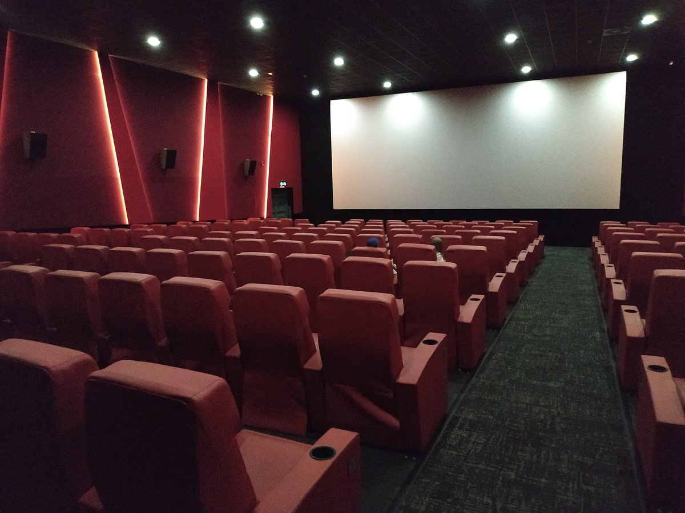
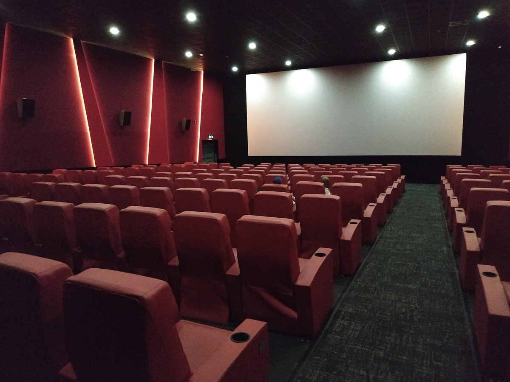
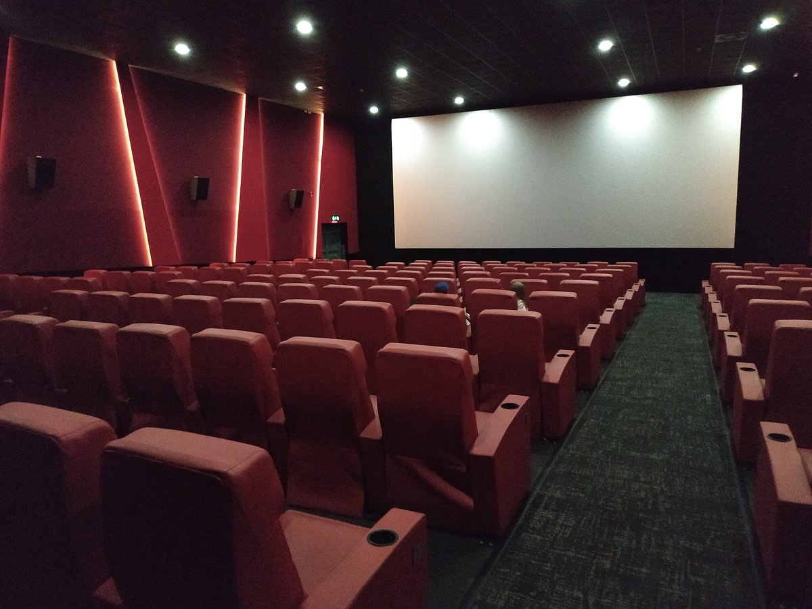

Galerie

 

Engagez-vous avec PLJ Solidaire pour bâtir une communauté plus forte, plus solidaire et plus innovante.
Rejoignez-nousPLJ Solidaire est un parti engagé pour améliorer la vie étudiante. Nous œuvrons pour l'unité, la solidarité et l'organisation d'activités mémorables.
Nous renforçons les liens entre les étudiants pour créer une communauté soudée.
Nous encourageons l'entraide et la réussite collective.
Des projets créatifs qui améliorent la vie étudiante.
Pour cette année, nous souhaitons :

Pour toute question ou suggestion, contactez-nous à Notre Forms